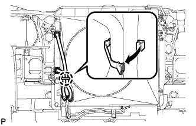

РАДИАТОР > СНЯТИЕ |
| 1. СНИМИТЕ ВЕРХНЕЕ УПЛОТНЕНИЕ КРОНШТЕЙНА РАДИАТОРА |
Освободите 13 фиксаторов и снимите верхнее уплотнение кронштейна радиатора.
| 2. СНИМИТЕ НИЖНЮЮ НАКЛАДКУ ПЕРЕДНЕГО БАМПЕРА |
Освободите фиксатор, выверните 5 болтов и снимите нижнюю облицовку переднего бампера.
| 3. СНИМИТЕ ЗАЩИТУ КАРТЕРА ДВИГАТЕЛЯ № 1 В СБОРЕ |
 |
Выверните 4 болта.
Отсоедините защиту картера двигателя от кузова автомобиля, как показано на рисунке.
| 4. СЛЕЙТЕ ОХЛАЖДАЮЩУЮ ЖИДКОСТЬ ДВИГАТЕЛЯ |

| *1 | Пробка расширительного бачка | *2 | Пробка радиатора |
| *3 | Пробка сливного крана блока цилиндров | *4 | Пробка сливного крана радиатора |
 |
Установите виниловый шланг со стороны радиатора.
| *1 | Виниловый шланг |
Установите виниловый шланг со стороны двигателя.
| *1 | Виниловый шланг |
Ослабьте пробку сливного крана радиатора.
Снимите пробку радиатора и слейте охлаждающую жидкость.
Ослабьте пробку сливного крана блока цилиндров и слейте охлаждающую жидкость из двигателя.
| 5. СНИМИТЕ НАКЛАДКУ ПЕРЕДНЕГО БАМПЕРА |
Снимите облицовку переднего бампера (Нажмите здесь).
| 6. СНИМИТЕ ВЕРХНИЙ ДЕРЖАТЕЛЬ ПЕРЕДНЕГО БАМПЕРА |
Выверните 3 болта и снимите держатель.
| 7. СНИМИТЕ ПРАВЫЙ БОКОВОЙ ОТРАЖАТЕЛЬ РАДИАТОРА |
 |
Используя съемник фиксаторов, открепите 3 захвата и снимите фиксатор. Затем сдвиньте боковой отражатель так, чтобы можно было снять радиатор.
| 8. СНИМИТЕ ЛЕВЫЙ БОКОВОЙ ОТРАЖАТЕЛЬ РАДИАТОРА |
Используя съемник фиксаторов, открепите 3 захвата и снимите фиксатор. Затем сдвиньте боковой отражатель так, чтобы можно было снять радиатор.
| 9. СНИМИТЕ РАСШИРИТЕЛЬНЫЙ БАЧОК РАДИАТОРА |
Отсоедините шланг бачка от радиатора.
Выверните 3 болта и снимите расширительный бачок радиатора.
| 10. СНИМИТЕ КОЖУХ ВЕНТИЛЯТОРА |
|  |
Отсоедините захват, чтобы разомкнуть зажим гибкого шланга.
 |
Ослабьте 4 гайки, крепящие вентилятор вискомуфты.
Снимите поликлиновой ремень вентилятора и генератора (Нажмите здесь).
 |
Выверните 2 болта, крепящие кожух вентилятора.
Отверните 4 гайки вентилятора вискомуфты, а затем снимите кожух вместе с вентилятором вискомуфты.
| 11. ОТСОЕДИНИТЕ ШЛАНГ РАДИАТОРА № 1 |
Отсоедините патрубок радиатора № 1 от радиатора.
| 12. ОТСОЕДИНИТЕ ШЛАНГ РАДИАТОРА № 2 |
Отсоедините патрубок радиатора № 2 от радиатора.
| 13. ОТСОЕДИНИТЕ ВПУСКНОЙ ПАТРУБОК МАСЛЯНОГО РАДИАТОРА (для моделей с автоматической трансмиссией) |
Отсоедините впускной патрубок масляного радиатора от радиатора.
| 14. ОТСОЕДИНИТЕ ВЫПУСКНОЙ ПАТРУБОК МАСЛЯНОГО РАДИАТОРА (для моделей с автоматической трансмиссией) |
Отсоедините выпускной патрубок масляного радиатора от радиатора.
| 15. СНИМИТЕ РАДИАТОР В СБОРЕ |
Выверните 4 болта и снимите радиатор.
| 16. СНИМИТЕ КРОНШТЕЙН РАДИАТОРА № 1 |
Снимите 2 кронштейна радиатора и 2 втулки кронштейнов радиатора № 1.
| 17. СНИМИТЕ КРОНШТЕЙН РАДИАТОРА № 2 |
Снимите 2 кронштейна радиатора и 2 втулки кронштейнов радиатора № 1.
| 18. СНИМИТЕ УПЛОТНЕНИЕ МЕЖДУ КРОНШТЕЙНОМ И РАДИАТОРОМ № 1 |
Снимите уплотнение с радиатора в сборе.
| 19. СНИМИТЕ УПЛОТНЕНИЕ МЕЖДУ КРОНШТЕЙНОМ И РАДИАТОРОМ № 2 |
Снимите уплотнение с радиатора в сборе.